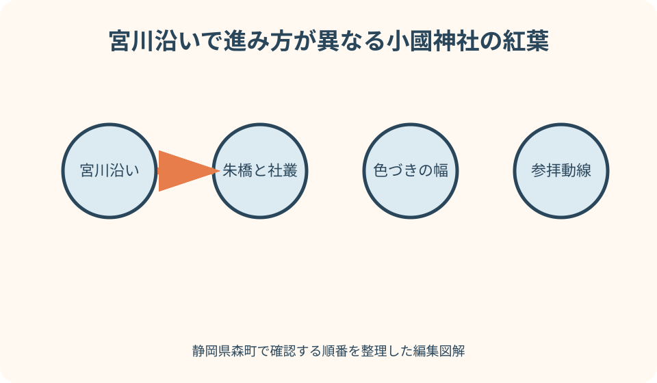
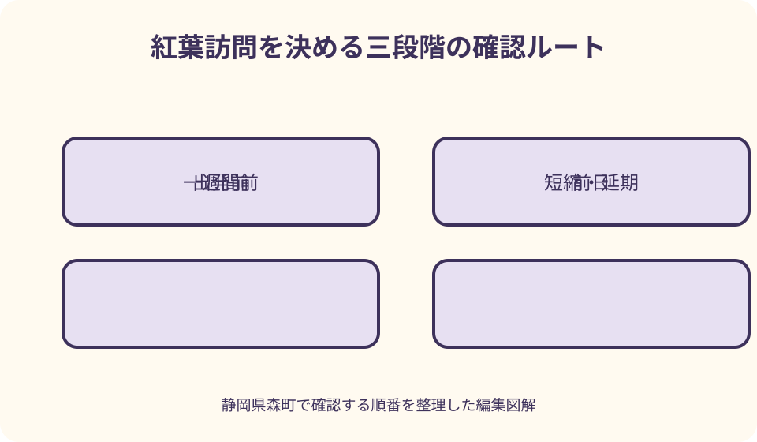

小國神社・四季の散策｜最終確認 2026-08-10
静岡県森町・小國神社の紅葉｜見頃・混雑・ライトアップを断定せずに計画する
小國神社の紅葉時期、照明演出、交通の混み方は年と日で変わります。宮川沿いの紅葉景観は町公式資料でも確認できますが、訪問年の実施日や色づきは小國神社公式の『森の四季』と最新案内、交通情報を直前に確認してください。

編集イラスト見頃を日付で決めないための前提
『何月何日が見頃か』を固定日で答える記事は便利に見えますが、自然相手では外れます。この記事は日付を予言せず、公式の色づき情報を見て出発判断する方法を扱います。
紅葉鑑賞と参拝を分けず、神社の境内であることを前提に歩きます。
紅葉の色づきは、一本の木でも枝や日当たりで進み方が違います。境内全体を『見頃』『まだ』『終了』の一語で切ると、現地の幅が消えます。公式写真を見るときは、撮影日、場所、赤・黄・緑の割合、落葉の状態を読みます。自分が見たいのが赤一色なのか、緑を残した移り変わりなのかを決めれば、他人の評価に振り回されにくくなります。
訪問日を選べる人は、特定の週末を最初から正解にしない方がよいでしょう。候補日を二つ置き、一週間前に神社公式の季節情報を見て、天候と家族の体調を重ねます。色づきが進んでいても、強風や大雨なら水辺と落葉の道は歩きにくくなります。景色の条件だけでなく、安全に散策できる条件を同じ重さで扱います。
遠方から来るため日を変えられない場合は、目的を三段階にします。第一は参拝、第二は宮川沿いの散策、第三が紅葉写真です。色づきが予想と違っても、第一と第二が成立すれば訪問全体を失敗にしない設計です。自然の変化を商品と同じように期待どおりか判定すると、目の前の森を見ないまま帰ることになります。
公式情報から確認できる小國神社の紅葉
森町公式ガイドは、小國神社境内を流れる宮川沿いのもみじと紅葉期の来訪を紹介しています。
町の景観資料は、明神通りから小國神社周辺を、歴史と四季の緑、一宮川の自然が重なる景観として扱っています。
小國神社公式には境内案内、交通案内、森の四季があります。色づきや催しは訪問年の公式発信で確認します。
過去の町資料に照明演出の記載があっても、2026年以降の実施を保証しません。日程、時間、範囲は最新案内で確認します。
神社公式に季節情報と交通案内があり、二次的な見頃予想だけに頼らず判断できます。
色づき、駐車場、照明演出、交通規制の最新情報へ一か所から進める案内があると、来訪者は判断しやすくなります。
良い点——宮川沿いを、参拝の道として歩く
紅葉期は参拝者と鑑賞者が同じ道を使います。撮影のために通路を塞がず、三脚の可否を現地ルールで確かめます。
宮川沿いは自然の地面と水辺があります。雨後、落葉、夕方は足元条件が変わるため、歩ける靴と灯りを用意します。
社殿、古木、宮川、紅葉を一つの散策で見られる景観の重なりが魅力です。
色づきが浅い日にも、参拝と森の散策という目的を残せます。
写真で見た朱橋や宮川沿いの場所へ急ぐ前に、境内案内で参拝の動線を確かめます。神社は紅葉園ではありません。社殿へ向かう人、祈りを終えて戻る人、子どもや高齢者が歩く人が同じ空間を使います。撮影位置を探して横切る、長時間立ち止まる、道具を広げる行為が通行を妨げていないか、自分で一度振り返ります。
服装は写真のための色合わせより、路面と気温差に合わせます。山に近い森と水辺では、町なかの体感と違うことがあります。脱ぎ着できる上着、滑りにくい靴、両手が空く鞄を選びます。雨具は傘だけでなく、混雑時に周囲へ当たりにくい物も検討します。現地の天候は出発直前に気象情報で確認します。
紅葉の葉を持ち帰る、枝へ触れる、川へ入って撮るといった行為は避けます。美しい場所が維持される条件は、来訪者が景観を消費物として扱わないことです。落葉一枚でも、境内の自然物です。現地に掲示された立入範囲と注意に従い、自分が来る前と同じ状態で離れることを基本にします。
散策中は、色づきの濃い場所へ人が集まっていたら、少し待つか別の場所を先に見ます。同じ構図を得るために列や通路を乱さないことです。森の中では光が変わり、数分後に別の景色になります。予定した写真を全部撮るより、周囲の音や川の流れを感じる時間を残す方が、小國神社の森を訪ねる意味に近づきます。

時間帯・混雑・ライトアップの考え方
混雑を避けるための早朝案は、授与所や周辺店舗の営業と一致しない場合があります。何を優先するか決めます。
ライトアップを目的にする場合は、実施の有無、期間、点灯時間、鑑賞できる範囲を一つずつ公式最新案内で確認します。過去の森町資料にライトアップの紹介があっても、同じ内容が毎年続くとは限りません。検索画面に前年の記事が出ることもあります。ページの公開年と対象年を読み、日付が現在の訪問予定と一致しない案内は参考記録に留めます。
照明がある夜は、昼より見やすい場所と、かえって暗く感じる場所ができます。駐車場から境内までの全経路が照らされるとは限りません。小さな灯りを用意し、手を空け、濡れた落葉や水辺へ近づきすぎないようにします。光を木や人へ向け続ける強い照明は、周囲の鑑賞と参拝を妨げるため、現地の指示を優先します。
夜間の帰路では、点灯終了直後に車の退出が重なる可能性を考えます。終了時刻を過ぎて境内に残る前提を持たず、少し早めに戻るか、運転者が休んでから動くかを家族で決めます。子どもが眠る、高齢者の足元が不安になるといった変化もあります。昼に歩けた距離を、夜も同じ条件で歩けるとは考えません。
混雑情報は『午前なら空いている』のような固定則にできません。曜日、天候、色づき、祭事、周辺の催し、報道によって変わります。神社や交通事業者が当日の案内を出しているなら、それを優先します。案内がない場合は、混雑を断定するのではなく、余裕ある時間、第二経路、延期基準を自分で用意します。
天候が急に変わったら、紅葉を見るために待ち続けず、社殿への参拝を済ませて戻ります。川の増水、強風、雷、路面の悪化は、色づきより優先する中止条件です。現地係員の案内や立入制限が出たら従います。遠くから来たことや宿泊費を理由に、安全条件を緩めないことが重要です。
駐車場と公共交通は、帰路から組み立てる
公共交通を使う場合は臨時運行を当然とせず、定期便と最新の臨時案内を別々に確認します。
車で向かう人は、小國神社公式のアクセスページを出発前に開きます。地図アプリが細い近道を示しても、現地の誘導や標識と違うなら従いません。満車時に周辺の生活道路や私有地へ停めることは、紅葉を見るための代案ではありません。臨時駐車場が設けられる年であっても、対象日、入口、退出方向を最新案内で確認します。
公共交通で訪れる場合、鉄道、バス、徒歩は別の運行主体と移動です。行きの接続だけでなく、帰りの便を先に決めます。臨時便や季節運行を見つけたら、対象日と予約要否を確認します。一本逃した場合の待ち時間が長いなら、散策を切り上げる時刻をスマートフォンの通知に入れておきます。
現地へ着いたら、駐車位置と集合場所を家族全員で確認します。スマートフォンの電波や電池だけに頼らず、鳥居、案内所、特定の看板など動かない目印を選びます。暗くなる前に戻る時刻も共有します。別行動をする人がいる場合、戻らなければ誰へ連絡するかまで決めます。
親と実家から向かうなら、帰路の暗さと運転交代も記録します。
子ども・高齢者・動物を伴うとき
高齢者や歩行に不安のある人と行く場合、駐車できるかだけでなく、降車位置、路面、休憩、トイレ、戻る距離を確認します。家族全員が同じ場所まで歩く必要はありません。一人が先に様子を見て、無理なら短い範囲で参拝する案を持ちます。見たい景色のために同行者へ限界まで歩いてもらう計画は立てません。
乳幼児と歩く場合、ベビーカーが自然の地面や混雑に合わない場面も想定します。抱っこひも、着替え、飲み物を用意し、川沿いでは子どもから目を離しません。写真を撮る大人と子どもを見る大人を明確に分けます。全員が同時にカメラへ集中する時間を作らないことが、水辺の散策では特に大切です。
犬など動物を伴う参拝は、現在の神社ルールを確認します。過去の写真に動物が写っていることは、現在どこでも同伴できる根拠にはなりません。境内、建物、混雑時で扱いが異なる可能性があります。他の参拝者や自然環境への影響も考え、確認できない場合は同行させない選択肢を持ちます。
大洞院など町内の別の紅葉場所を同日に詰め込む案も、移動と滞在を見て判断します。二か所を回れば満足が二倍になるとは限りません。駐車、歩行、日没が重なれば、一か所ずつの時間が短くなります。家族にどちらを優先するか聞き、第二の場所は次回へ残す判断も尊重します。
訪問日、色づき、駐車位置、歩いた経路、同行者が休めた場所を残します。

注文したい点——撮影と発信で守りたいマナー
紅葉写真だけが拡散されると境内であることが薄れます。撮影マナーも同じ強さで案内したいところです。
三脚、ドローン、商用撮影、人物撮影の扱いは、過去の訪問記ではなく現在の神社案内に従います。禁止の表示が見当たらないことを許可と解釈しません。大きな機材を使う目的があるなら、事前に神社へ確認します。他の参拝者が写り込んだ写真を公開するときも、顔や車両番号など個人を特定できる情報へ配慮します。
紅葉の見え方を記録するなら、『見頃だった』だけでなく、撮影日時、天候、歩いた範囲、日当たり、落葉、混雑の体感を書きます。ただし翌年も同じ日に同じ状態になるとは考えません。家族の記録は未来の参考であって予報ではありません。写真にも撮影日を付け、古い画像を最新状況として共有しないようにします。
SNSへ投稿するとき、今その場所にいると示すことで人が集中する可能性があります。境内で道を塞いで編集せず、安全な場所へ移ってから公開します。混雑の写真は人の顔を避け、駐車の裏道や無断駐車につながる位置情報を便利情報として広めません。公式が示すアクセスへリンクする方が、地域の生活を守る案内になります。
注文したいのは、来訪者側にもあります。公式情報を読まずに現地係員へ同じ質問を重ねない、案内のない場所へ停めない、撮影のために境内設備を動かさない。この三つを守るだけでも、繁忙日の負担は変わります。情報が不足している点は問い合わせますが、回答を自分だけの特例として期待しません。
代案・結論——ことまち横丁との動線と、三段階の確認
『混雑しない時間』は天候や催しで変わります。記事が特定時刻を保証するのは避けます。
一週間前に森の四季、前日に天候と交通、出発前に当日の公式発信を確認します。
色づき、参拝、食事の優先順位を家族で一つ決めます。
混雑が強い場合は青もみじや別季節の参拝へ切り替える案も持ちます。
食事や買い物を組み合わせる場合、ことまち横丁など周辺施設の営業を神社の開門や紅葉情報と混同しません。施設ごとに公式情報と連絡先があります。参拝を終える時刻、店へ移る時間、売切れの可能性を別々に考えます。紅葉期だから必ず延長営業すると期待せず、利用したい施設の当日案内を確認します。
青もみじの時期を代案にすることには意味があります。森町公式には小國神社と大洞院の青もみじを紹介するページがあり、過去の案内では初夏から夏の緑が扱われています。ただし、そのページの更新日は2022年です。現在の見頃を保証する資料ではなく、秋以外にも森を見る選択肢があることを知る入口として使い、訪問時は神社公式の季節情報へ戻ります。
一週間前の確認では、神社公式の森の四季と最新のお知らせを読み、候補日の色づきと催しを整理します。ここではまだ見頃を決めません。公式写真がどの場所で撮られたか分からなければ、境内全体の状態へ広げて解釈しません。家族には『この写真の範囲では』という言い方で共有します。
前日の確認では、天候、道路、公共交通、神社の最新案内を見ます。照明演出が目的なら、実施日と終了時間をここで再確認します。公式に中止や変更が出ていなくても、当日の天候で変わる可能性を残します。問い合わせが必要な場合は、公式ページに記載された連絡先を使い、受付可能な時間帯へ簡潔に尋ねます。
出発前の確認では、当日の公式発信、交通の運行状況、家族の体調を見ます。この時点で一つでも危険条件があれば、昼だけにする、歩く範囲を短くする、別日にするという順で縮小します。準備に時間をかけた日ほど中止しづらくなりますが、延期できることは自然を訪ねる計画の強みです。
大石の視点と結論
私（大石）は、紅葉期の小國神社を案内するとき、到着時刻より帰る時刻を先に決めます。色づきを追って滞在を延ばすほど、日没、足元、駐車場の退出が重なるからです。公式の点灯や交通案内がある日でも、同行者が安全に歩ける時間を家族の終了時刻にします。
もう一つ大事なのは、参拝、紅葉、食事を一度に成功させようとしないことです。宮川沿いをゆっくり歩くなら、ことまち横丁での滞在を短くすることがあります。食事を主目的にするなら、紅葉散策を短い区間にします。優先順位を一つ決める方が、同行者にも周囲にも余裕が生まれます。
地域を紹介する側として、混雑を『にぎわい』の一語で美化しないようにしています。来訪者には生活道路へ入らず公式の誘導へ従ってもらい、地域側の負担と参拝者の楽しみを同時に守る必要があります。記事も近道や無断駐車につながる案内を出さず、公式アクセスへ戻すのが責任だと考えます。
私（大石）が家や土地の相談と結び付けて考えるのは、季節の混雑が道路の一面だけを見せるからです。紅葉期に車が多い道を見て『いつも通りにくい』と決めず、平日や別季節にも確認します。逆に、通常期に静かな道でも、年中行事や観光期に交通が変わることを所有者から聞きます。現地確認は一回の印象を事実へ変えない作業です。
実家が一宮地区や参拝経路の近くにある家族は、来訪者の車、騒音、ごみ、出入りへの影響を記録できます。ただし迷惑という結論から始めず、日時、場所、継続時間、生活への具体的影響を残します。道路や敷地境界が分かりにくいなら、公図や登記、現地標識を順に確認し、観光客とのその場の口論で解決しようとしません。
結論として、紅葉は『何日に行けば当たりか』ではなく、『どの情報をいつ見て、どこまでなら安全に楽しめるか』を決めます。見頃、混雑、照明演出の三つは別の可変情報です。神社公式、町の資料、交通事業者の役割を分けて確認し、当日の案内に従います。色づきが想像と違っても、参拝し、森を傷めず、家族が無事に帰れたなら、その訪問には十分な価値があります。
見頃日と照明演出を固定情報にしません。
神社公式の森の四季と最新交通案内を三段階で確認します。
参拝者と自然への配慮を優先します。
公式情報・確認先
掲載内容は次の一次情報を基礎に整理しました。営業、料金、催し、交通は変わるため、出発前または手続き前にリンク先で最新情報を確認してください。
- 森町観光ガイドブック（自然・紅葉）（静岡県森町、2026-08-10確認）
- 森町景観計画 第3章 景観形成方針（静岡県森町、2026-08-10確認）
- 森町の花めぐり動画公開（静岡県森町、2026-08-10確認）
- 杜の四季（遠江國一宮 小國神社、2026-08-10確認）
- 境内の自然（遠江國一宮 小國神社、2026-08-10確認）
- 交通アクセス（遠江國一宮 小國神社、2026-08-10確認）
- ことまち横丁公式サイト（ことまち横丁、2026-08-10確認）